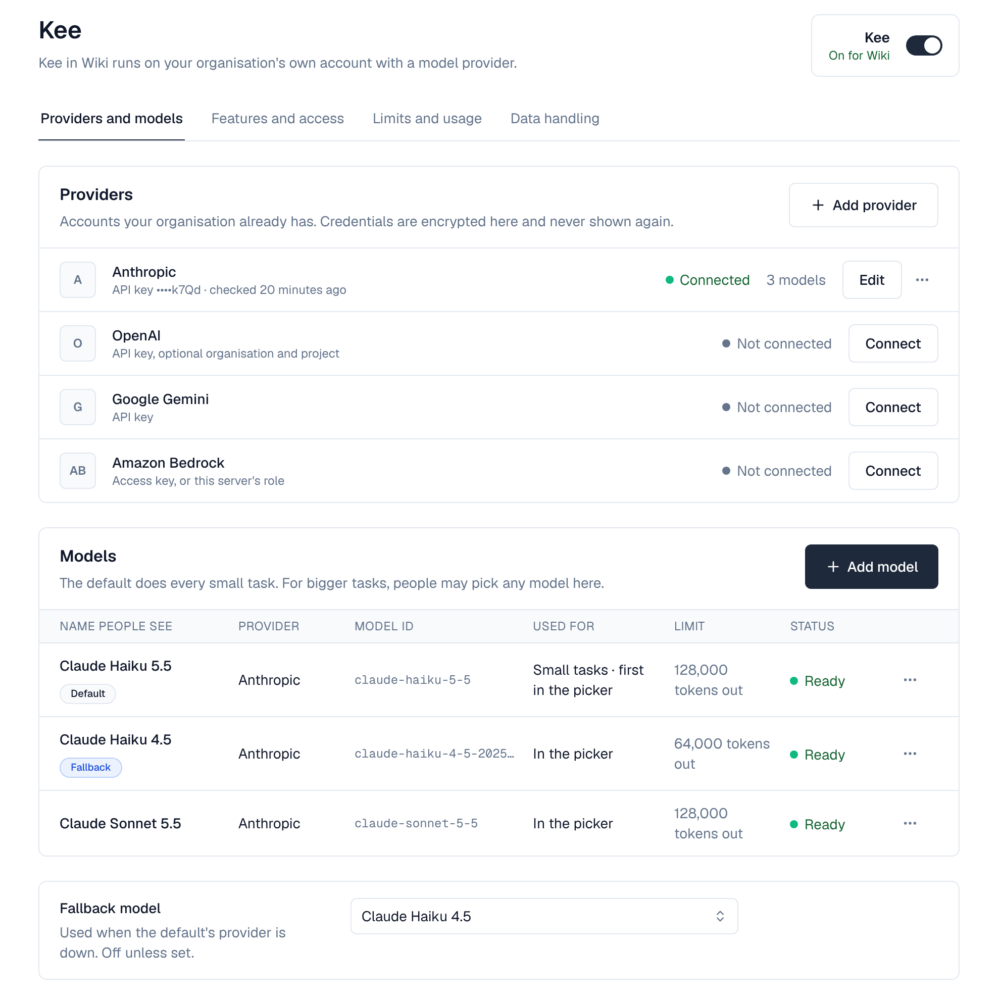
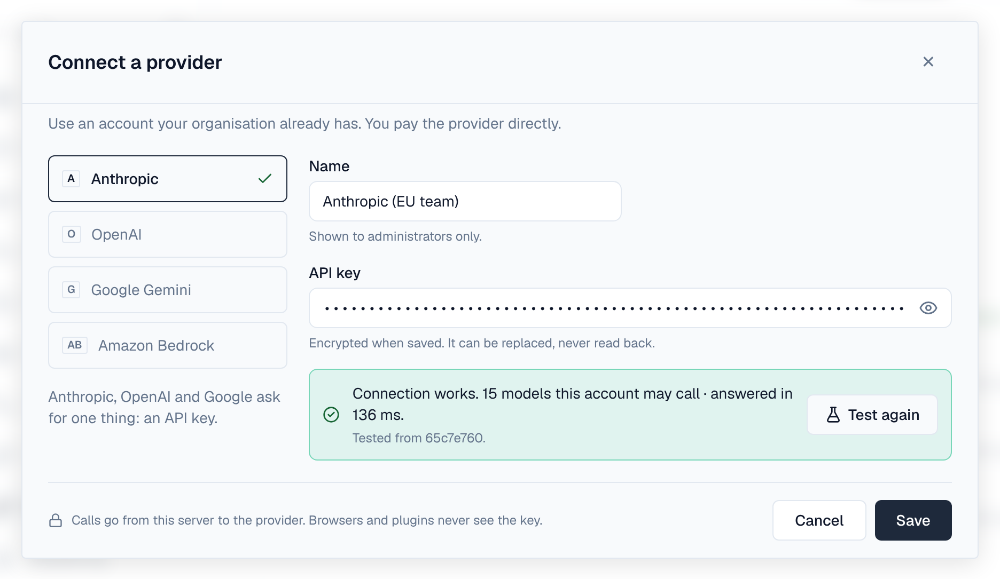
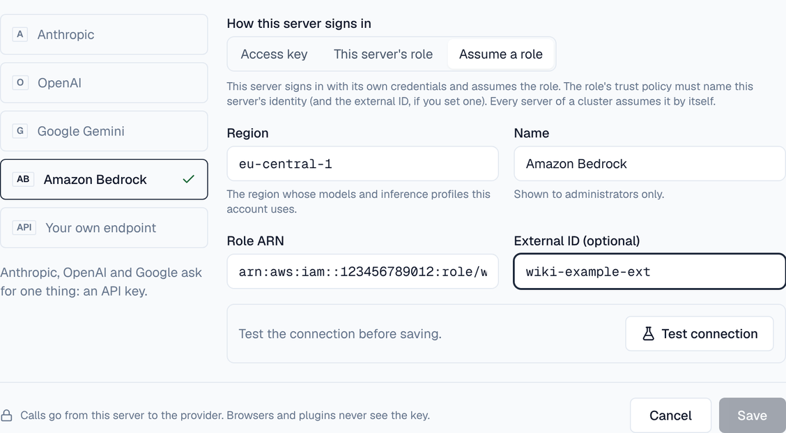
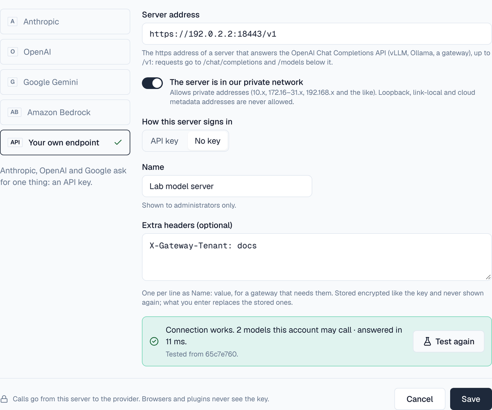
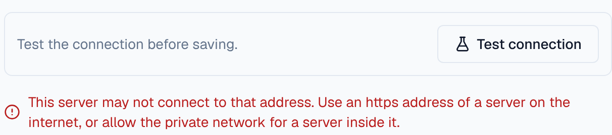
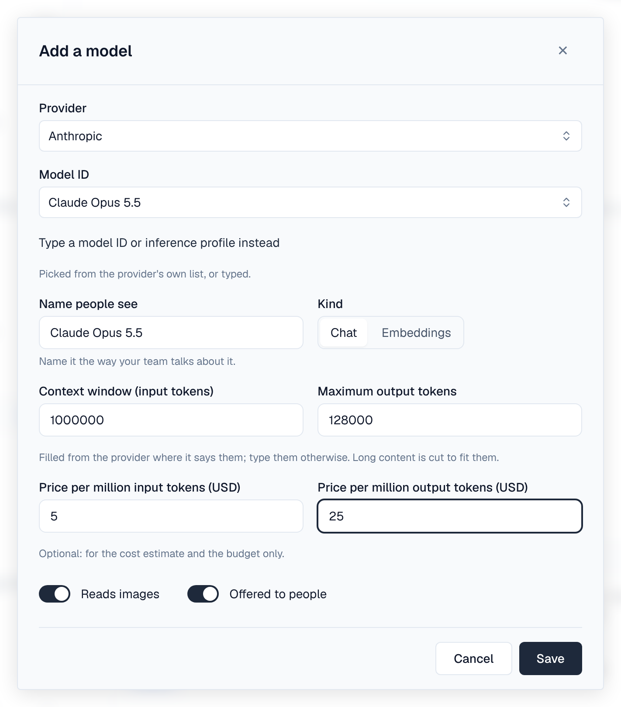
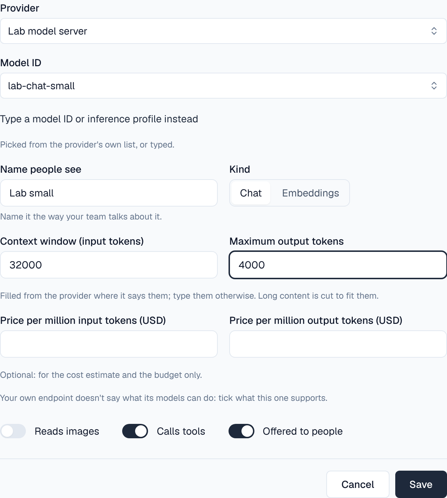

Settings → Kee → Providers and models holds the accounts Kee uses and the models people may pick. Credentials are encrypted on the server and never shown again after saving.

1. Connect a provider
- Open the dialog — Connect beside a provider, or Add provider.
- Fill in the credentials — Each provider asks for different things (below). Name is shown to administrators only.
- Test the connection — Test connection calls the provider from the server and says how many models the account may call and how long it took, or why it failed. Save is only possible after a passed test of exactly what you typed.
- Save — The key is encrypted with the installation's key. The list then shows only its last four characters.

| Provider | What it asks for | Notes |
|---|---|---|
| Anthropic | API key | |
| OpenAI | API key; optional organisation ID and project ID | Its model list includes models that aren't for chat: add only chat models |
| Google Gemini | API key | The Gemini API key, not Vertex AI |
| Amazon Bedrock | Region, and an access key ID and secret access key, This server's role, or Assume a role | See Amazon Bedrock |
| Your own endpoint | The server's https address; an API key or No key; optional extra headers | Any server that answers the OpenAI Chat Completions API. See Your own endpoint |
- To replace a key, Edit the provider and type the new one; leaving the field empty keeps the stored key. A key can be replaced, never read back.
- Remove deletes the provider's credentials. A provider that still has models can't be removed: remove its models first.
- A failed test says why in plain words (credentials rejected; the account may not do this because of permissions, quota or billing; the server can't reach the provider), with the provider's own message and the server it was tested from.
- Each provider's status shows in the list: Connected, Not tested, Key rejected or Failing.
2. Amazon Bedrock
- Region is where the account's models and inference profiles are called. It decides where your text is processed.
- Access key stores an access key ID and secret access key. This server's role stores no key at all: the server uses its instance profile or pod role. Every server of a cluster needs the same role; the test runs on the server that got the request.
- Assume a role stores no key either: the server signs in with its own credentials (its instance profile, pod role or the usual AWS environment) and then takes on the role you name. See Assume a role.
- The role or user needs bedrock:InvokeModelWithResponseStream, bedrock:InvokeModel, bedrock:ListFoundationModels and bedrock:ListInferenceProfiles.
- Models can be foundation models or inference profiles. Bedrock doesn't say a model's limits: type them when you add it.
3. Assume a role
Use Assume a role when the account that may call Bedrock is not the one the servers run in, or when you want Kee to have a role of its own.

| Field | Meaning |
|---|---|
| Role ARN | The role Kee takes on, such as arn:aws:iam::123456789012:role/wiki-kee. It needs the Bedrock permissions above |
| External ID (optional) | A shared word the role's trust policy asks for. Leave it empty if the policy asks for none |
- The role's trust policy must name the identity your servers sign in with (their instance profile or pod role), and the external ID if you set one.
- That identity needs permission to assume the role (sts:AssumeRole on the role's ARN).
- Each server assumes the role by itself, through the security token service in the provider's region, and renews the short-lived credentials before they run out. Allow sts.<region>.amazonaws.com too (see Network).
- If the test says the role could not be assumed, check the trust policy, the external ID and the sts:AssumeRole permission: those are the usual causes.
4. Your own endpoint
Your own endpoint connects a model server you run or a gateway in front of models, such as vLLM, Ollama or a company AI gateway. It must answer the OpenAI Chat Completions API: requests go to /chat/completions and /models under the address you give.

| Field | Meaning |
|---|---|
| Server address | The https address up to and including the API version, such as https://models.example.internal/v1. Plain http is not accepted |
| The server is in our private network | Allows private addresses (such as 10.x, 172.16 to 172.31, 192.168.x). Off by default: then only addresses on the internet are allowed |
| How this server signs in | API key, sent as a bearer token, or No key for a server that asks for none |
| Extra headers (optional) | One per line as Name: value, for a gateway that needs them, up to 10. They are stored encrypted like a key and never shown again; what you type replaces the stored ones. A key and an Authorization header can't be used together |
Which addresses are allowed, checked when you save and again on every call (so a name that later points somewhere else is refused too):
- Always refused: loopback (127.0.0.1, localhost, ::1), link-local addresses, cloud metadata addresses and names, and other reserved ranges.
- Private addresses only with The server is in our private network on.
- No redirects are followed, and the server's HTTPS_PROXY is not used for this provider: the Wiki must see where it connects.

Such a server doesn't say what its models can do. When you add one of its models, its list may be empty: type the model ID. Then fill in the Context window, Maximum output tokens, Reads images and Calls tools yourself, as the model's own documentation gives them.
5. Add a model
Add model offers a model of a connected provider to people:

| Field | Meaning |
|---|---|
| Provider, Model ID | Picked from the provider's own list, or typed (a model ID or a Bedrock inference profile) |
| Name people see | Name it the way your team talks about it. People pick models by this name |
| Kind | Chat for everything people use Kee for; Embeddings for search by meaning only |
| Context window and Maximum output tokens | Filled from the provider where it says them; type them otherwise. Kee cuts long content to fit |
| Price per million input and output tokens | Optional, in the currency of your budget. Only for the cost estimate and the monthly budget |
| Reads images | Whether the model accepts images. Only such models are sent images: Describe with Kee needs the default model to read them, and Ask Kee with images the model chosen. A request with images is refused for any other model, before anything is counted, and never falls back to a model that can't read them. See Images and Kee |
| Calls tools | Whether the model can use tools. On by default. Features that need tools (Ask Kee and agents) refuse a model without it before anything is sent, and never fall back to one. Turn it off for a model that can't call tools, typically on your own endpoint |
| Offered to people | Off keeps the model in the list without offering it |

6. The default model
- The default does every small task (fixing spelling and grammar, page summaries) and is first in every model picker. Exactly one model is the default; Make default in a model's menu changes it.
- Writing help and Ask Kee let people pick any model that is offered. The picker shows only when there are two or more.
- Pausing or removing the default first asks Which model takes over? A removed model's name stays in the usage records.
7. The fallback model
Fallback model is used when the default's provider is down: busy, rate limiting, unreachable, timing out, or rejecting its key. Kee tries the fallback once, before any text has arrived; the person sees which model answered. A model someone picked never falls back, and a request that was too long or declined isn't retried. A fallback at another provider than the default's needs Enterprise. It is off unless set.
8. Health checks
- Every five minutes each server asks each provider for its model list (no tokens, no cost) and records whether it worked.
- The system check shows AI default model (a default exists and its provider works) and AI providers (each server reaches each provider).
- Administrators get an alert when a provider rejects its credentials, at once, and when it has been failing for five minutes.
9. Network
Calls go from the Wiki's servers to the provider; browsers and plugins never see the key. Allow outbound HTTPS from every server to the providers you use:
| Provider | Hosts |
|---|---|
| Anthropic | api.anthropic.com |
| OpenAI | api.openai.com |
| Google Gemini | generativelanguage.googleapis.com |
| Amazon Bedrock | bedrock-runtime.<region>.amazonaws.com and bedrock.<region>.amazonaws.com; with Assume a role also sts.<region>.amazonaws.com |
| Your own endpoint | The address you entered, directly |
Provider calls use the server's standard HTTPS_PROXY and NO_PROXY environment and the system's trusted certificates, except calls to your own endpoint, which go directly. There is no separate proxy or certificate setting for Kee.
10. Timeouts and retries
A provider that is busy or rate limiting is retried a few times before the first words arrive, never after. An answer that breaks part way keeps what arrived and is marked incomplete: nothing incomplete is put on a page.